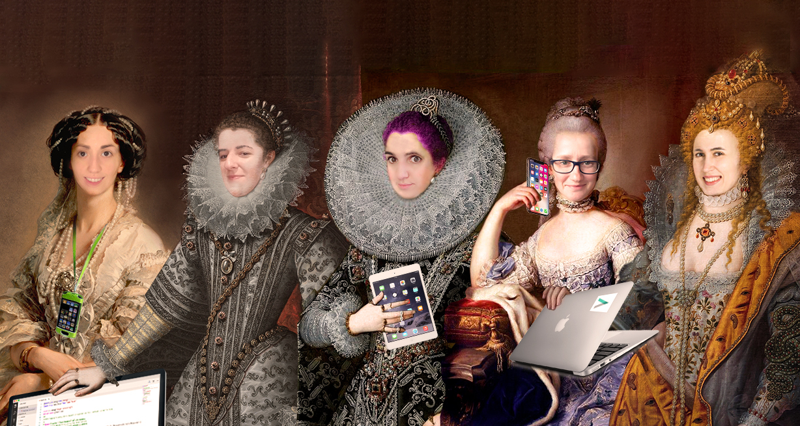
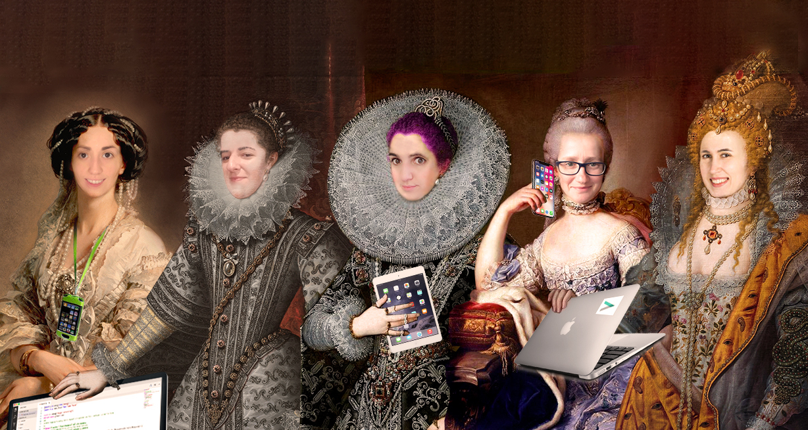

Marina Carbonell
Nacida y residente en Madrid, no se me puede considerar gata por muy poco. Estudié Turismo y me dediqué unos años a ellos, aunque he dedicado los últimos años al Marketing Digital. Me encanta cocinar y por ello comer y probar cosas nuevas, visitar mercadillos y museos, las cosas antiguas, bucear y el cine y los conciertos. Soy una mujer a la que le gusta saber que aporta su granito de arena en que las cosas a su alrededor sean mejor, soy trabajadora, cariñosa y tenaz. Como seguro que quieres saber mi lado negativo, diré que soy terca y pasional. Un personaje que me representa puede ser una mezcla de Ameliè y Cactus de Las Supernenas.